O ArtDecor fica na tela do celular como qualquer outro aplicativo — o ícone tem um “A” rosa no fundo vinho.
Na primeira vez, o app mostra um tutorial que passa por todas as telas. Durante ele aparecem alguns dados de exemplo (a cliente “Silvia Exemplo”, o “João Exemplo” e peças com “(exemplo)” no nome). Eles são só para mostrar e somem sozinhos quando o tutorial termina — nada é salvo.
Quer ver de novo? Toque em “Ajuda”, no alto da tela de Início.
O app lembra de você: nas próximas vezes já abre direto no Início, sem pedir senha. Para sair, toque em “Sair” no alto da tela de Início.
É o resumo do dia. Dá pra ver tudo de uma olhada:
| + Novo pedido | Começa um pedido novo (parte 9). |
| Na rua | Pedidos que estão com os clientes agora. |
| Reservados | Pedidos combinados que ainda vão ser retirados. |
| Voltam hoje | O que precisa voltar hoje (ou já está atrasado). |
| A receber | Quanto ainda falta receber, somando todos os pedidos (inclusive cobranças de peça quebrada). |
| Próximos dias | O que Sai, o que Volta e o que está Atrasado. Toque num nome para abrir o pedido. “Ver calendário” abre a Agenda. |
| Primeiros passos | Lista de tarefas para começar. Cada uma se marca sozinha quando você faz. Dá pra recolher a lista. |
| Avisos · Ajuda · Sair | No alto: Avisos liga os avisos no celular (parte 14); Ajuda abre o tutorial de novo; Sair desconecta. |
Embaixo de todas as telas fica o menu: Início · Agenda · Estoque · Pedidos · Clientes.
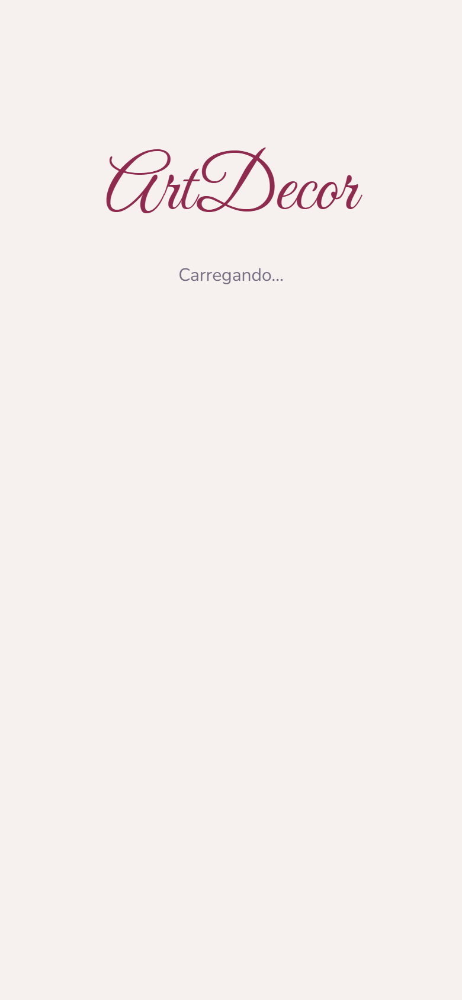
Um calendário do mês com o que sai e o que volta em cada dia.
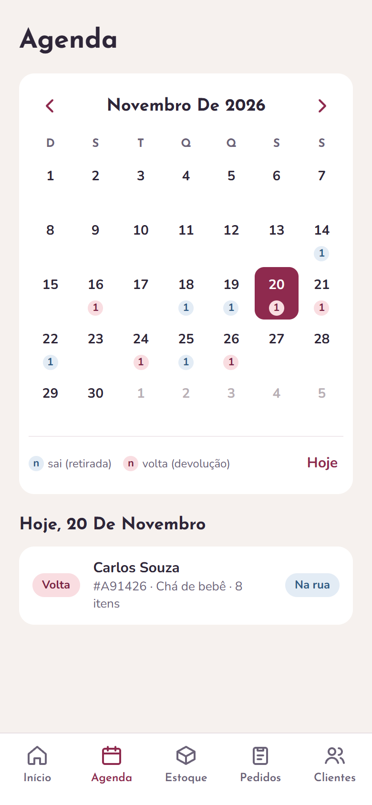
Aqui estão todas as peças da loja.
| Falta contar | A quantidade ainda não foi preenchida. |
| Barra azul “8 de 12 livres” | Quantas unidades estão em casa agora, do total. |
| Livre | Peça única que está em casa. |
| Alugado | Peça única que está com um cliente. |
No alto da tela, troque entre Itens e Temas (parte 7).
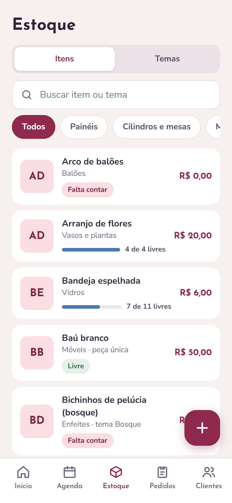
Muitos itens já foram cadastrados, mas estão como Falta contar e com valor R$ 0. Para completar um de cada vez pela ficha (ou vários em sequência pela contagem rápida, parte 6):
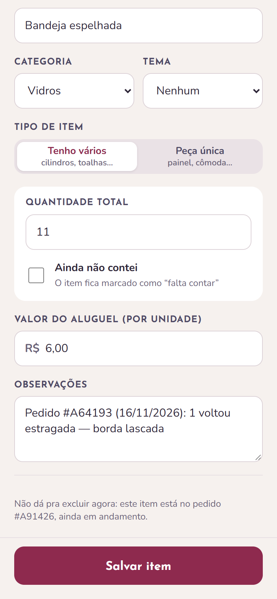
O jeito mais rápido de completar as peças Falta contar: o app mostra uma de cada vez, em sequência, sem precisar abrir e fechar cada uma.
Enquanto houver peças sem contagem, aparece a faixa rosa “Contagem rápida” no alto do Estoque, e o aviso “itens sem contagem” no Início. Toque em Contar.
Não dá pra contar alguma agora (está na rua, guardada longe…)? Toque em Pular. Errou a anterior? “← Peça anterior”.
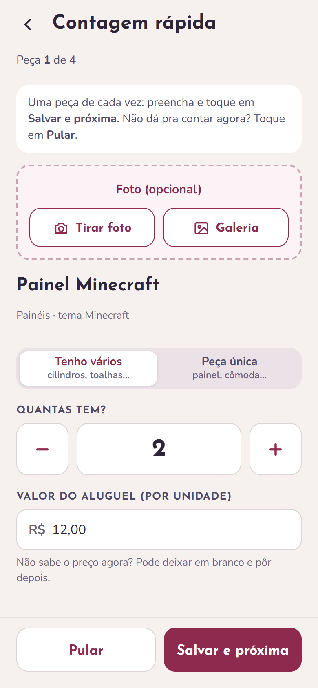
Um tema junta as peças que costumam sair juntas — por exemplo, o kit Heróis tem o painel, as capas dos cilindros, os prédios e os bonecos.
Na hora de fazer o pedido, basta tocar no tema e todas as peças do kit entram de uma vez.
No Estoque, toque em Temas lá em cima. Cada tema mostra as peças do kit e se está Livre, Reservado ou Na rua, com a data.
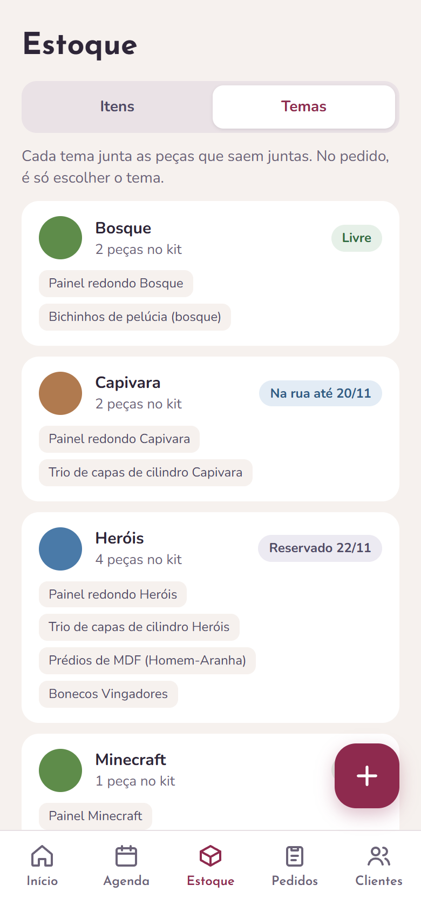
Na aba Clientes ficam todos os clientes. A busca aceita nome, telefone, modelo do carro ou placa — útil quando alguém chega na porta e você só reconhece o carro.
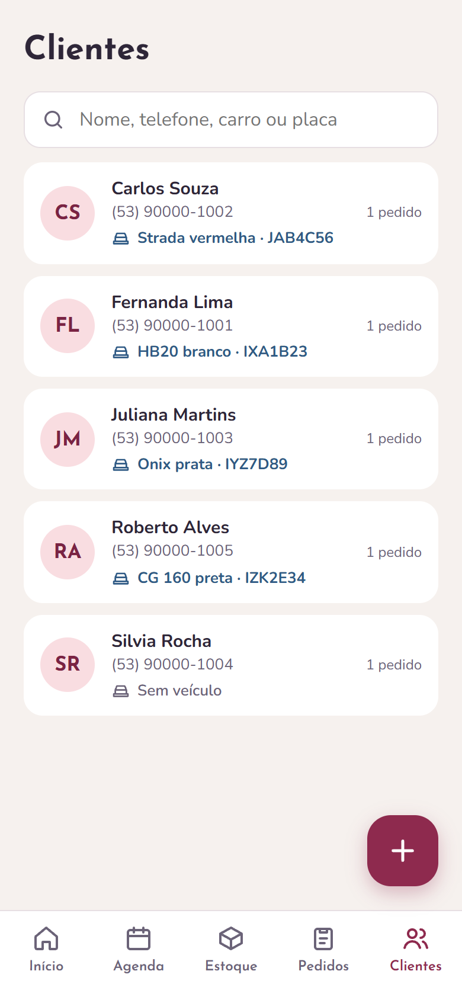
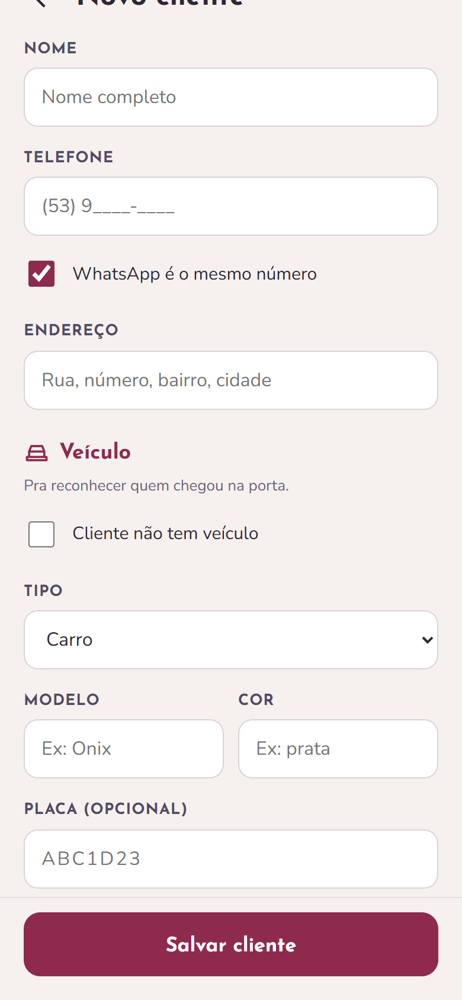
Tocando num cliente você pode editar os dados e ver todos os pedidos dele.
Toque em + Novo pedido no Início (ou no + da tela de Pedidos).
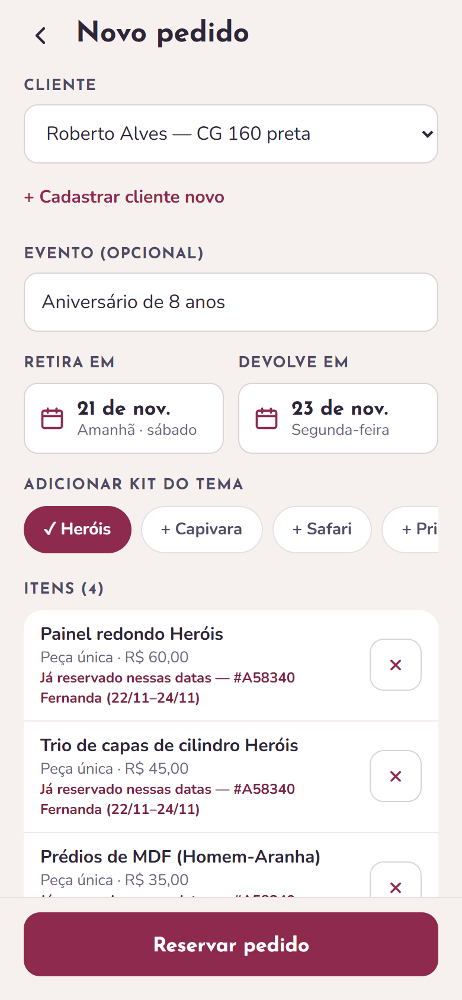
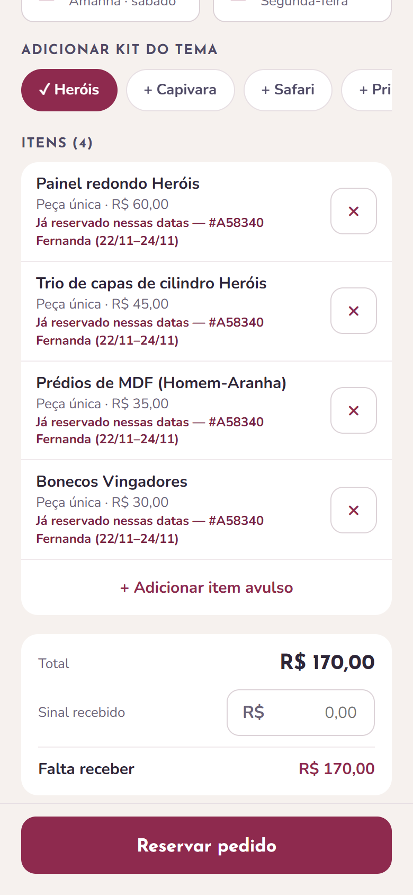
Enquanto você preenche um pedido, um cliente, uma peça, um tema ou a conferência da devolução, o app guarda tudo no celular a cada toque.
A tela recarregou, o app fechou, a bateria acabou ou atendeu uma ligação no meio? Abra a mesma tela de novo:
Quer começar do zero? Toque em Descartar.
O rascunho fica só no seu celular e vale por 7 dias.
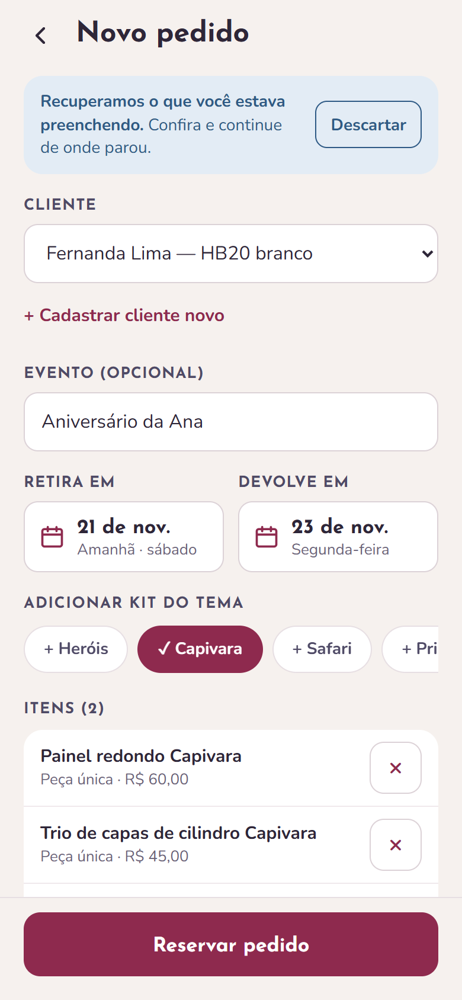
Todo pedido passa por três etapas. A barra colorida no topo do pedido mostra em qual ele está:
Logo abaixo do cliente tem o botão Lembrar retirada no WhatsApp (ou devolução, se já está na rua). Ele abre o seu WhatsApp na conversa do cliente com a mensagem pronta — é só tocar em enviar.
A mensagem chega como “Lembrete automático — ArtDecor”, então fica claro que é um aviso do sistema. A saudação muda sozinha conforme o horário: “Bom dia”, “Boa tarde” ou “Boa noite”.
Logo abaixo da barra aparece “← Voltar para…”. É só tocar.
Editar (canto de cima) troca itens, datas ou cliente. Pedidos reservados têm “Cancelar pedido” no fim da tela — e podem ser reativados depois.
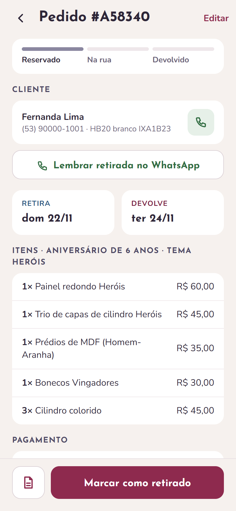
Este é um exemplo do lembrete de devolução que o cliente recebe no WhatsApp (o tutorial do app mostra esta mesma tela).
O lembrete de retirada é parecido: “O grande dia está chegando!”, com a data de retirada.
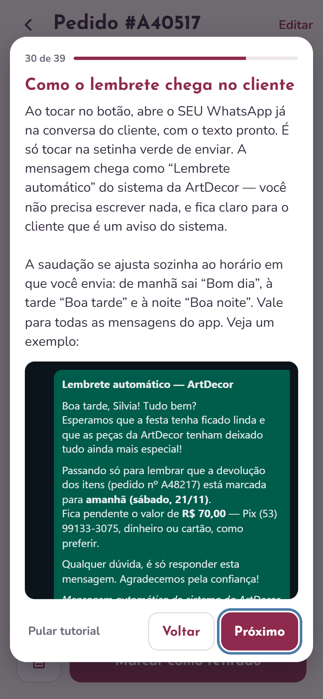
Dentro de cada pedido tem a parte Pagamento, com o total, o que já foi pago e o que falta.
Quando estiver tudo pago, aparece ✓ Pedido pago.
Na lista de Pedidos, cada pedido mostra se está Pago, Sem sinal ou quanto Falta.
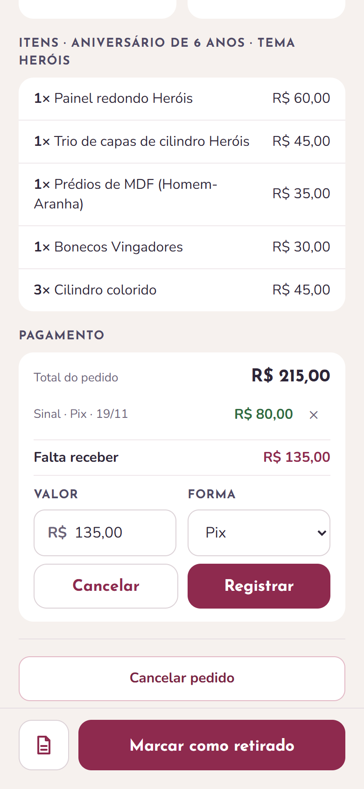
Quando o cliente devolve, abra o pedido e toque em Conferir devolução. Aparece a lista das peças do pedido.
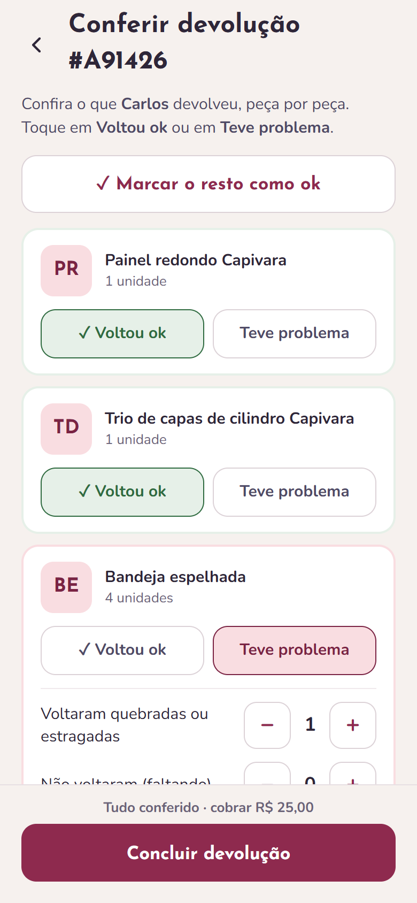
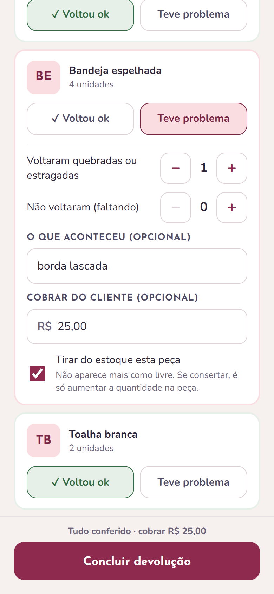
No pedido devolvido aparece a parte Devolução, com quem conferiu, quando, e o que voltou com problema.
Toque em “Corrigir conferência”. Ela abre do jeito que ficou; mude o que precisar e conclua de novo. O estoque se ajusta sozinho (devolve ou tira só a diferença).
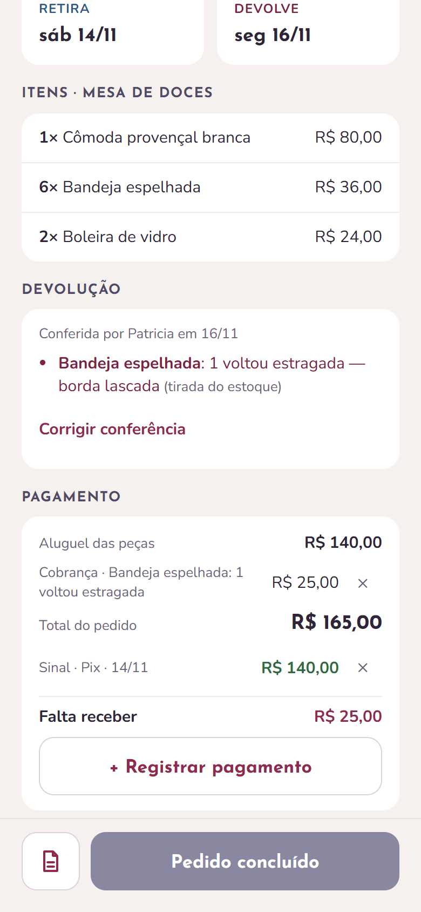
Cada pedido gera uma nota de locação em PDF, com o logo da ArtDecor, os itens, os valores, o Pix, as condições e os nomes do cliente e da Patricia como assinatura.
Abra o pedido e toque no ícone de documento (no canto de baixo, ao lado do botão principal). Embaixo da nota ficam três botões:
| Enviar nota no WhatsApp | Manda o PDF da nota + o resumo do pedido, juntos. |
| Só mensagem | Abre direto a conversa do cliente, só com o texto (sem o PDF). |
| Baixar PDF | Guarda a nota no celular. |
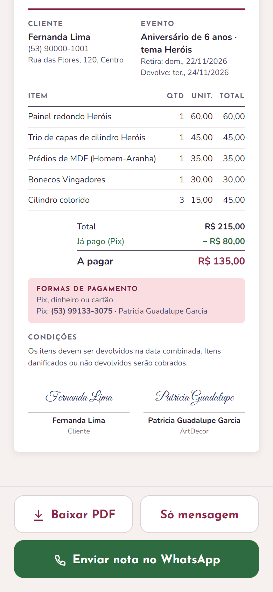
No WhatsApp do cliente chegam, juntos:
Assim você não precisa escrever nada: é só conferir e enviar.
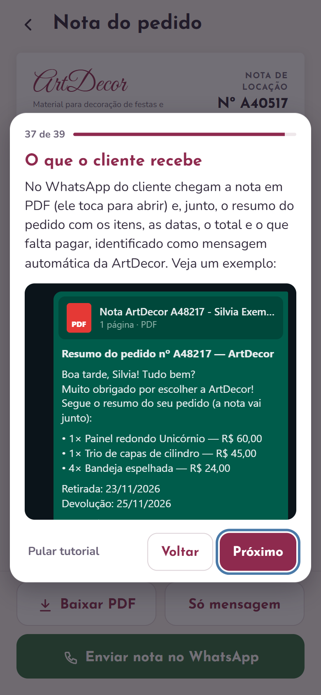
O celular avisa sozinho, mesmo com o app fechado, quando tem algo pra fazer. Os avisos são só para a equipe — os clientes não recebem nada.
| Resumo do dia | De manhã (~8h): o que sai, o que volta e o que está atrasado. Se o dia está livre, não avisa. |
| Retiradas de amanhã | No fim da tarde (~18h): quem retira amanhã e quantas peças separar. |
| Devolução atrasada | Na manhã seguinte ao dia combinado, se o pedido ainda não voltou. |
Tocando no aviso, o app abre direto no pedido (ou na Agenda).
Na mesma tela dá para escolher quais avisos receber. Vale só para aquele celular: cada pessoa ativa no seu.
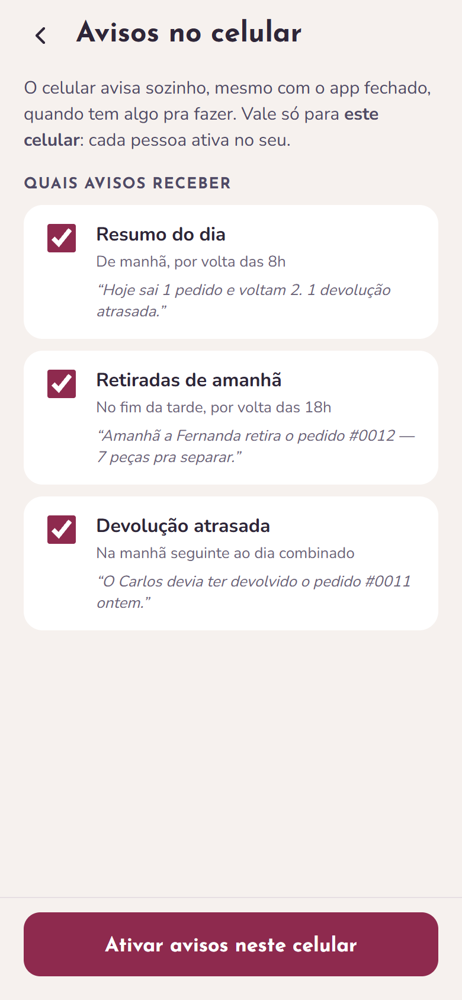
| Apareceu uma faixa vermelha no topo | Algo não foi salvo (geralmente falta de internet). Confira a conexão e toque em salvar de novo — o que você digitou continua na tela. |
| “Isso é só um exemplo do tutorial” | Você tentou mudar um dado de exemplo durante o tutorial. Eles não são salvos — termine ou pule o tutorial para usar os dados de verdade. |
| Cadastrei no meu celular, aparece nos outros? | Sim! Você, o Junior e o Maycel veem tudo igual, na hora. |
| E se o celular quebrar? | Nada se perde: tudo fica na nuvem, e o sistema faz uma cópia de segurança automática todo dia. No fim do Início também tem “Cópia de segurança dos dados” para baixar planilhas. |
| Excluí sem querer | Itens e clientes excluídos somem das listas, mas não se perdem dos pedidos antigos. Peça ajuda ao Junior para recuperar. |
| Esqueci a senha | Fale com o Junior: ele cria uma senha nova. |
| O app está estranho ou desatualizado | Numa lista (Início, Estoque…), puxe a tela para baixo para atualizar. Se não resolver, feche o app e abra de novo. |
Qualquer dúvida, é só tocar em Ajuda no app ou chamar o Junior. 💜